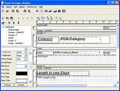
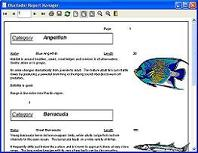

Report manager is a reporting application (Report Manager Designer) and also a set of components for Delphi, Builder and Kylix, also supports development enviroment accepting ActiveX controls (Visual Basic,Visual FoxPro,any Visual Studio.Net language...) also a C dynamic standard library with exported functions is provided to use the engine with any other language like GNU C
|  |  |
It also includes a TCP enabled Report Server so thin clients can obtain reports processed in the server. Also a fully functional web report server application is available, generating Adobe PDF files on the fly.A true net and web report server with no license fees and multiprocessor support.
New: Delphi 8 for .Net support.
ActiveX plugin allows embedding the preview and print in a Microsoft Internet Explorer.
Boxed product and other services available for purchase.
Report Manager is opensource under the MPL license model, (including a GPL allowed use clause) so you can use it in your commercial software but any enhacements to the engine must be published
It works in Windows and Linux, You can distribute the report designer, so you modify the reports without modifying your application, the result can be exported to Adobe PDF format.
Report Manager has many features, including exclusive ones like single page subreports ,metafile report ,use device fonts, external sections and child subreports.
If you are using Delphi/Kylix/Builder, you can include the reporting engine in your executables, that includes the preview window, complete print dialog, report options dialog...
Click here for current version new features.
Click here to see an overview of development environments supported.
Visit also the useful Documentation and F.A.Q.